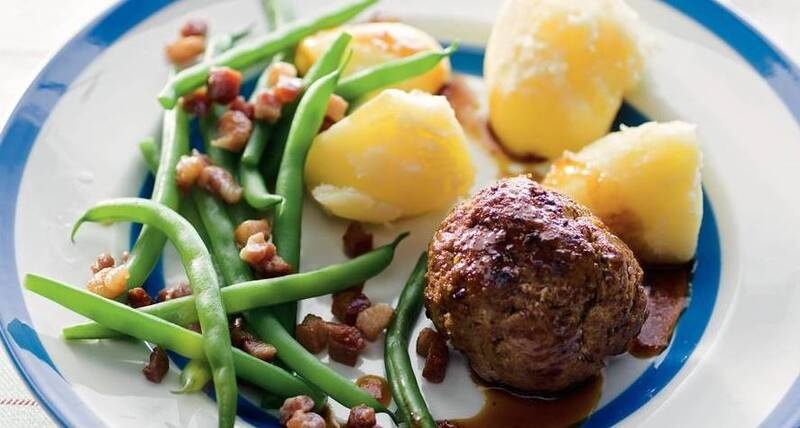

Aardappels vlees groente recept

Beschrijving
Dit heerlije recept is de ideale maaltijd na een koude fietstocht na een lange werkdag.
We zullen op deze pagina het recept van een Hollandse variant delen!
Ingredienten
- Aardappelen
- Vlees
- Groente
- J'us
- Nootmuskaat
Stappen
- Kook aardappelen
- Bak vlees
- Gril groente
- Voeg nootmuskaat toe
- Voeg j'us toe